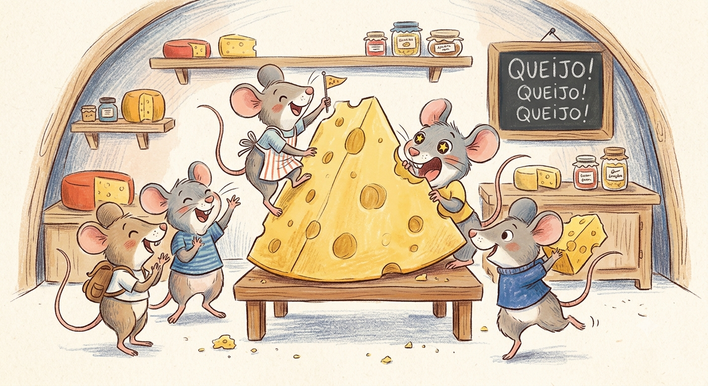
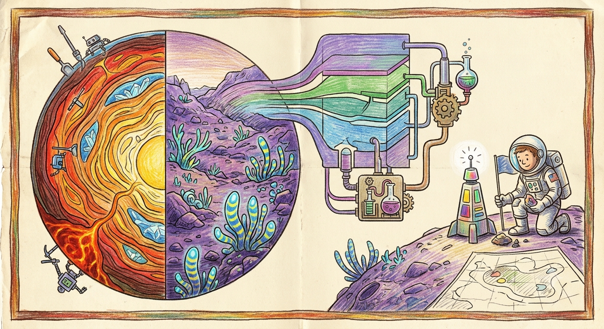
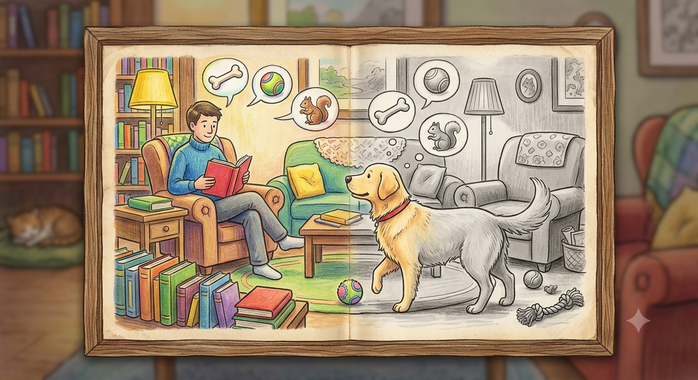

O mel é o único alimento que nunca estraga?

Verdade! Por ter pouca água e ser ácido, bactérias não conseguem crescer nele.
O mel é o único alimento que nunca estraga?
Verdade! Por ter pouca água e ser ácido, bactérias não conseguem crescer nele.
Água com açúcar realmente acalma uma pessoa?

Mito! O efeito é psicológico (placebo), pois o açúcar não tem propriedades sedativas.
A cor vermelha deixa os touros furiosos?

Mito! Touros não enxergam o vermelho; eles atacam pelo movimento do pano do toureiro.
Ratos são loucos por queijo?

Mito! Eles preferem alimentos doces, grãos e sementes. O queijo é o último recurso.
O Sol é, na verdade, uma estrela branca e não amarela?

Verdade! Nós o vemos amarelo por causa da atmosfera da Terra que espalha a luz.
Os cães enxergam o mundo apenas em preto e branco?

Mito! Eles enxergam cores, mas principalmente tons de azul, amarelo e cinza.